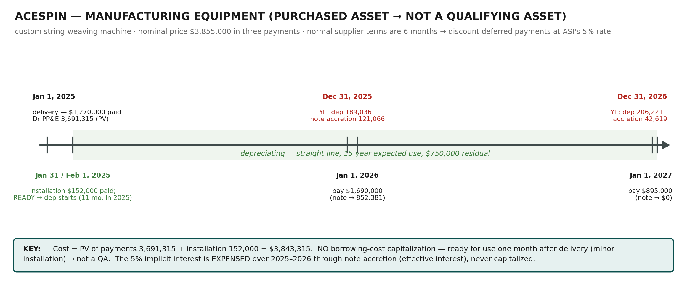
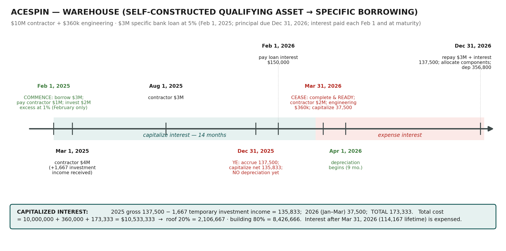

One company, followed through every PP&E decision the week tests.
Case methodWeek 9
HOW TO USE THIS DOCUMENT Step 1 — attempt cold (§1): build both timelines and draft every journal entry before reading §6–§7. Step 2 — mark yourself against the worked playbooks, using §2 to see where marks actually sit. Step 3 — drill (§11): the counterfactuals change one fact each and force the concept to move. Numbers follow the official sample-solution conventions (rounded to the nearest dollar).
1. Cold Attempt First: the Scenario in Brief + Blank Deliverables
AceSpin Inc. (ASI) — publicly traded Canadian manufacturer of tennis racquets, balls and ball machines. It is April 5, 2026; the team is finalizing the December 31, 2025 statements. Cost model; months for partial-year depreciation; borrowing rate 5%; no borrowings other than the loan below. Required: apply the Problem-Solving Process and prepare all 2025 and 2026 journal entries for both scenarios (assume nothing recorded yet; all payments made as scheduled). Classification and recognition need only be analyzed for the equipment. All issues are material.
Asset
Facts you must work with
Custom manufacturing equipment
Delivered Jan 1, 2025 from ProTech; minor installation by a separate supplier during January — $152,000 paid Jan 31; ready to use end of January, in production Feb 1. Price $3,855,000: $1,270,000 on delivery, $1,690,000 due Jan 1, 2026, $895,000 due Jan 1, 2027, no stated interest; ProTech's regular terms are payment within 6 months. Manufacturer life 20 years; ASI expects to use it 15 years then sell for $750,000; benefit consumed equally.
Raw-material storage warehouse
Self-constructed on ASI's land, adjacent to the plant. Construction Feb 1, 2025 → complete and ready Mar 31, 2026. Contractor: $1M (Feb 1/25), $4M (Mar 1/25), $3M (Aug 1/25), $2M (Mar 31/26). $3M bank loan Feb 1, 2025 at 5%; principal due Dec 31, 2026; interest paid each Feb 1 and at maturity. Only $1M needed before Mar 1/25 → $2M excess invested at 1% for February. Engineering firm (design approval) paid $360,000 on Mar 31/26; it estimates 20% of total costs relate to the roof. Building life 25 years, residual $1,800,000; roof replaced in 10 years; benefit consumed equally.
Your blank deliverables — reproduce on paper before turning the page:
Deliverable
What “complete” looks like
Two timelines
Every date, payment, year-end, readiness date and financing event placed (compare §4)
Issue list
Five issues, each named as classification / recognition / initial measurement / subsequent measurement (compare §5)
Equipment analysis
Met?-tables for classification and recognition; cost build-up; depreciation parameters
Warehouse analysis
QA conclusion; capitalization window; interest computation net of investment income; component split
Journal entries
2025: four equipment entries + six warehouse entries. 2026: three equipment entries + six warehouse entries (counting the two-line Dec 31/25 interest treatment as two)
INDICATIVE TIME BUDGET Proportions, not minutes: assess ~15% · identify ~10% · analyze ~40% · recommend (journal entries, stated to the dollar) ~35%. If analysis passes half your time before any entry exists, start writing entries — the recommend step carries the calculations.
2. How PBL Answers Are Marked (Assess → Identify → Analyze → Recommend)
Stage
What the marker wants
AceSpin example of the standard
Assess the situation
Users, required, context factors; an accurate timeline of transactions and events
Public company (IFRS, not ASPE) · Dec 31 year-end · finalizing 2025 statements in April 2026 · both timelines drawn
Identify the issues
Issues named in financial-reporting language, scoped to what the required asks
The five issues of §5 — not “how do we account for the machine?”
Analyze
Standard quoted → criterion → connected to a quoted case fact → met?/conclusion, for every judgment
“Held for use in the production of goods: the equipment is used in the production of tennis equipment — criterion met”
Recommend
Full journal entries, dated, supported by visible calculations
§6.4 and §7.5 — every figure traceable to a computation shown earlier
WHY IT MATTERS “Connect to case facts” is where PBL marks live. Every lecture solution writes the connection explicitly — criterion, then the fact, then “criteria met.” An answer that recites IAS 16.6 without quoting AceSpin facts scores like a definitions quiz, not a case response.
3. The Two-Asset Mindset — the Distinction That Runs the Whole Case
AceSpin is deliberately built as a contrast pair. Classify each asset correctly at the start and every later step falls out mechanically; blur them and both cost build-ups go wrong. This table is the case:
Manufacturing equipment
Warehouse
Nature
PURCHASED asset, ready for use one month after delivery (minor installation)
SELF-CONSTRUCTED asset, 14 months of construction
Qualifying asset (IAS 23)?
NO — no substantial period needed to ready it
YES — necessarily takes a substantial period
Financing element
Deferred payments beyond normal 6-month terms → discount to cash price equivalent (PV at 5%)
$3M specific bank loan at 5% during construction
Interest treatment
EXPENSED over time as note accretion (effective interest) — never touches the asset
CAPITALIZED Feb 1/25 → Mar 31/26, net of temporary investment income; expensed after
Roof 20% ($2,106,667, 10-yr life, no residual) + building 80% ($8,426,666, 25-yr life, $1,800,000 residual)
Depreciation starts
Feb 1, 2025 (available for use) → 11/12 in 2025
Apr 1, 2026 (ready Mar 31) → 9/12 in 2026; nothing in 2025
EXAM TRAP Both assets carry 5% interest — and the treatments are opposite. The note's implicit 5% is the cost of credit on a purchased, ready-to-use machine: accretion expense. The loan's 5% is the cost of financing construction of a qualifying asset: capitalized while construction runs. Students who capitalize the note interest (or expense the construction interest) have missed the QA test — Core §4's first question.
4. Assess: Build the Timelines
The official solution's “assess” step is two timelines. Amounts, year-ends, readiness dates, financing events — everything you need for the entries is already on them.

Equipment: one asset, two years of entries — acquisition PV, installation, depreciation from availability, and note accretion until the note dies Jan 1, 2027.

Warehouse: the capitalization window is the spine — commence Feb 1, 2025 (all three IAS 23 conditions met on one day), cease Mar 31, 2026 (ready), depreciation from Apr 1, 2026.
5. Identify: the Five Issues
#
Issue (financial-reporting language)
Standard
Core §
1
Classification of the manufacturing equipment as PP&E, and whether it can be recognized
IAS 16.6–.7
§2
2
Initial measurement of the equipment: deferred payment terms + installation
IAS 16.16–.17, .23
§3
3
Subsequent measurement of the equipment: method, life, residual, partial year
IAS 16.50–.62
§8
4
Initial measurement of the warehouse: engineering fees + borrowing costs
IAS 16 + IAS 23
§3–§4
5
Subsequent measurement of the warehouse: components, timing, partial year
IAS 16.43–.45
§6, §8
The required expressly says: do not repeat classification/recognition for the warehouse — it clearly qualifies. Spending lines there earns nothing.
6. Playbook A — Manufacturing Equipment (Analyze + Recommend)
6.1 Classification and recognition — the Met?-tables
IAS 16.6 criterion
Case fact
Met?
Tangible item
Physical automated string-weaving machine
Yes
Held for use in production or supply of goods
Specifically designed for and used in ASI's tennis-equipment production
Yes
Expected to be used > one period
ASI expects to use it for 15 years
Yes
IAS 16.7 criterion
Case fact
Met?
Probable future economic benefits
Used in core manufacturing; cash flows from production and the expected $750,000 resale
Yes
Cost reliably measurable
Price negotiated with the vendor; installation invoiced by a separate supplier
Yes
Conclusion: classify and recognize as PP&E. Two lines each, criterion → fact → met — that is the full expected answer.
ProTech's normal terms are six months; ASI pays over two years → the price contains financing. Cost = PV of the payments at ASI's 5% borrowing rate:
Payment
Timing
PV at 5% ($)
$1,270,000
On delivery (Jan 1, 2025)
1,270,000
$1,690,000
1 year away — ÷ 1.05
1,609,524
$895,000
2 years away — ÷ 1.05²
811,791
Cash price equivalent
3,691,315
Installation — necessary to bring the asset to working condition
Paid Jan 31, 2025
152,000
Total capitalized cost
3,843,315
EXAM TRAP No IAS 23 capitalization here — and you must say why: the machine was ready for use within a month of delivery after minor installation, so it is not a qualifying asset. The implicit interest unwinds through interest expense (accretion) over 2025–2026. One explicit sentence in the exam; several marks.
Straight-line (“benefit consumed equally”). Useful life to ASI = 15 years — management's expected period of use governs, not the manufacturer's 20-year physical life; the 20 years simply makes the 15 credible. Residual = $750,000 expected sale price at the end of year 15. Depreciable amount = 3,843,315 − 750,000 = 3,093,315; annual charge = 3,093,315 ÷ 15 = 206,221. Available for use end of January → 2025 charge = 206,221 × 11/12 = 189,036; 2026 = a full 206,221.
6.4 The note-payable schedule (official solution figures)
Date
Payment ($)
Accretion at 5% ($)
Note balance ($)
Jan 1, 2025 — initial PV of deferred payments
2,421,315.19
Dec 31, 2025 — accretion (2,421,315 × 5%)
121,065.76
2,542,380.95
Jan 1, 2026 — payment
(1,690,000)
852,380.95
Dec 31, 2026 — accretion (852,381 × 5%)
42,619.05
895,000.00
Jan 1, 2027 — payment
(895,000)
0.00
The built-in check: the balance accretes to exactly $895,000 the day before the final payment. If yours doesn't, the PV or a payment is wrong.
6.5 All equipment journal entries
Jan 1, 2025 — acquisition at cash price equivalent
Jan 1, 2025 — acquisition at cash price equivalent
Jan 1, 2025 — acquisition at cash price equivalent
Dr PP&E — Manufacturing Equipment
3,691,315
Cr Cash
1,270,000
Cr Long-Term Note Payable
2,421,315
Jan 31, 2025 — installation (directly attributable)
Jan 31, 2025 — installation (directly attributable)
Jan 31, 2025 — installation (directly attributable)
Dr PP&E — Manufacturing Equipment
152,000
Cr Cash
152,000
Dec 31, 2025 — depreciation (206,221 × 11/12)
Dec 31, 2025 — depreciation (206,221 × 11/12)
Dec 31, 2025 — depreciation (206,221 × 11/12)
Dr Depreciation Expense — Mfg Equipment
189,036
Cr Accumulated Depreciation — Mfg Equipment
189,036
Dec 31, 2025 — note accretion (2,421,315 × 5%)
Dec 31, 2025 — note accretion (2,421,315 × 5%)
Dec 31, 2025 — note accretion (2,421,315 × 5%)
Dr Interest Expense
121,066
Cr Long-Term Note Payable
121,066
Jan 1, 2026 — first deferred payment
Jan 1, 2026 — first deferred payment
Jan 1, 2026 — first deferred payment
Dr Long-Term Note Payable
1,690,000
Cr Cash
1,690,000
Dec 31, 2026 — depreciation (full year)
Dec 31, 2026 — depreciation (full year)
Dec 31, 2026 — depreciation (full year)
Dr Depreciation Expense — Mfg Equipment
206,221
Cr Accumulated Depreciation — Mfg Equipment
206,221
Dec 31, 2026 — note accretion (852,381 × 5%)
Dec 31, 2026 — note accretion (852,381 × 5%)
Dec 31, 2026 — note accretion (852,381 × 5%)
Dr Interest Expense
42,619
Cr Long-Term Note Payable
42,619
7. Playbook B — Warehouse (Analyze + Recommend)
7.1 IAS 23 applied — specific borrowing, netted for investment income
Qualifying asset? Yes — construction necessarily runs Feb 2025 to Mar 2026. The $3M loan exists to finance this construction and ASI has no other borrowings → specific borrowing: capitalize its actual cost less income from temporarily investing unused funds. Commencement: Feb 1, 2025 — expenditures (contractor $1M), borrowing costs (loan drawn) and construction activities all start that day, so all three conditions are met at once. Cessation: Mar 31, 2026 — complete and ready for use.
Capitalized interest
Computation
Amount ($)
2025 gross interest (11 months)
3,000,000 × 5% × 11/12
137,500
Less: temporary investment income (Feb only)
2,000,000 × 1% × 1/12
(1,667)
2025 net capitalized
135,833
2026 capitalized (Jan 1 – Mar 31)
3,000,000 × 5% × 3/12
37,500
Total capitalized
173,333
The lifetime reconciliation the official solution tables — worth memorizing as a self-check:
Loan interest, Feb 1, 2025 → Dec 31, 2026 (23 months)
Amount ($)
Total interest incurred (3,000,000 × 5% × 23/12)
287,500
Capitalized, Feb 1/25 → Mar 31/26 (net of 1,667 investment income)
Building component — 80% (25-year life, residual 1,800,000)
8,426,666
KEY RULE The 20% applies to TOTAL cost — including the engineering fees and the capitalized interest, not just the contractor payments. And the residual: the case says “the building will have … a residual value of $1,800,000,” so all of it belongs to the building component; the roof (replaced in 10 years) has none. The roof is significant (20%) with a materially different life — exactly IAS 16.43's trigger for separate depreciation.
7.3 Depreciation — from availability, not completion of the paperwork
Ready for use Mar 31, 2026 → depreciation runs Apr–Dec 2026 = 9 months. Roof: 2,106,667 ÷ 10 × 9/12 = 158,000. Building: (8,426,666 − 1,800,000) ÷ 25 × 9/12 = 198,800. Total 2026 charge 356,800. Nothing in 2025 — the asset was not yet available for use.
7.4 All warehouse journal entries — 2025
Feb 1, 2025 — draw the loan; first contractor payment; invest the excess
Feb 1, 2025 — draw the loan; first contractor payment; invest the excess
Feb 1, 2025 — draw the loan; first contractor payment; invest the excess
Dr Cash
3,000,000
Cr Bank Loan Payable
3,000,000
Dr PP&E — Warehouse under Construction
1,000,000
Cr Cash
1,000,000
Dr Short-Term Investment
2,000,000
Cr Cash
2,000,000
Mar 1, 2025 — collapse the investment (with February's 1% income); pay contractor
Mar 1, 2025 — collapse the investment (with February's 1% income); pay contractor
Mar 1, 2025 — collapse the investment (with February's 1% income); pay contractor
Dr Cash
2,001,667
Cr Short-Term Investment
2,000,000
Cr Interest Income (2,000,000 × 1% × 1/12)
1,667
Dr PP&E — Warehouse under Construction
4,000,000
Cr Cash
4,000,000
Aug 1, 2025 — contractor payment
Aug 1, 2025 — contractor payment
Aug 1, 2025 — contractor payment
Dr PP&E — Warehouse under Construction
3,000,000
Cr Cash
3,000,000
Dec 31, 2025 — accrue 11 months' interest, then capitalize net of investment income
Dec 31, 2025 — accrue 11 months' interest, then capitalize net of investment income
Dec 31, 2025 — accrue 11 months' interest, then capitalize net of investment income
Dr Interest Expense (3,000,000 × 5% × 11/12)
137,500
Cr Interest Payable
137,500
Dr PP&E — Warehouse under Construction
135,833
Cr Interest Expense (137,500 − 1,667)
135,833
No depreciation at Dec 31, 2025. The two interest lines may be combined into one net entry; the official solution notes both presentations are acceptable. Net 2025 P&L effect of the financing: 137,500 expense − 135,833 capitalized − 1,667 income = 0 — everything the construction caused ended up in the asset.
7.5 All warehouse journal entries — 2026
Feb 1, 2026 — pay the first year's interest (12 months to Jan 31)
Feb 1, 2026 — pay the first year's interest (12 months to Jan 31)
Feb 1, 2026 — pay the first year's interest (12 months to Jan 31)
Dr Interest Expense (January 2026)
12,500
Dr Interest Payable (accrued at Dec 31/25)
137,500
Cr Cash (3,000,000 × 5%)
150,000
Mar 31, 2026 — final contractor payment; engineering; capitalize Q1 interest; construction ends
Mar 31, 2026 — final contractor payment; engineering; capitalize Q1 interest; construction ends
Mar 31, 2026 — final contractor payment; engineering; capitalize Q1 interest; construction ends
Dr PP&E — Warehouse under Construction
2,000,000
Cr Cash
2,000,000
Dr PP&E — Warehouse under Construction
360,000
Cr Cash (engineering fees)
360,000
Dr PP&E — Warehouse under Construction
37,500
Cr Interest Expense (3,000,000 × 5% × 3/12)
37,500
Dec 31, 2026 — repay principal + 11 months' interest (Feb–Dec, paid at maturity)
Dec 31, 2026 — repay principal + 11 months' interest (Feb–Dec, paid at maturity)
Dec 31, 2026 — repay principal + 11 months' interest (Feb–Dec, paid at maturity)
Dr Bank Loan Payable
3,000,000
Dr Interest Expense (3,000,000 × 5% × 11/12)
137,500
Cr Cash
3,137,500
Dec 31, 2026 — move the completed asset into its components
Dec 31, 2026 — move the completed asset into its components
Dec 31, 2026 — move the completed asset into its components
Dr PP&E — Roof (20%)
2,106,667
Dr PP&E — Warehouse Building (80%)
8,426,666
Cr PP&E — Warehouse under Construction
10,533,333
Dec 31, 2026 — depreciation, 9 months from availability (Apr 1)
Dec 31, 2026 — depreciation, 9 months from availability (Apr 1)
Dec 31, 2026 — depreciation, 9 months from availability (Apr 1)
Dr Depreciation Expense
356,800
Cr Accumulated Depreciation — Roof
158,000
Cr Accumulated Depreciation — Warehouse Building
198,800
OFFICIAL-SOLUTION NUANCES Two flexibilities flagged in red in the sample solution: (1) the roof and building can stay in one PP&E account or be separated — as long as depreciation is computed separately and cost + accumulated depreciation are tracked per component (you'll need them when the roof is derecognized in 10 years); (2) the component split could equally have been recorded at March 31, 2026 when the warehouse was complete — Dec 31 is a presentation choice, not a rule.
8. Professional Judgments & Quality-of-Earnings Red Flags
A stated learning outcome of this PBL is seeing how much of PP&E accounting is estimate and judgment. Name these explicitly in your answer:
Judgment
The call in AceSpin
Why it matters (QoE angle — Core §11)
Useful life
15-year expected use governs over the 20-year physical life
Longer life → lower annual depreciation; watch for lives that stretch when earnings tighten
Residual values
$750,000 (equipment) and $1,800,000 (building) — management estimates
Higher residual → lower depreciable base; both are unverifiable until far in the future
Component split
20% roof rests on one engineering estimate
Shifting weight to the 25-year building from the 10-year roof cuts the near-term charge (drill 2 quantifies it)
Ready-for-use dates
Equipment end of January; warehouse Mar 31, 2026
The dates set both when depreciation starts and when interest capitalization stops — two levers on one estimate
Temporary investment window
Excess funds “temporary” for February only
Longer window → more income netted → less capitalized
QA conclusion itself
Equipment no, warehouse yes
The binary that decides whether 5% interest hits income now or the balance sheet
9. Red-Flag Phrases: What the Case Writer Is Signalling
If the case says…
It signals…
Action
“Regular payment terms are payment due within 6 months”
Actual terms are beyond normal credit
PV the payments at the borrowing rate — cash price equivalent
“Installation, which was minor … ready to use by the end of January”
Not a qualifying asset; availability date
No IAS 23 capitalization; depreciation from availability (11/12)
“Put into production on February 1st”
Distractor
Depreciation follows availability for use, not first production run
“No borrowings other than the $3M noted”
Specific borrowing; no general pool
Capitalize actual loan interest, net of temporary investment income
“Excess funds were invested at 1% for the month of February”
“Engineering firm … estimates that 20% of the total costs relate to the roof”
Component accounting
Split TOTAL cost (incl. engineering + interest) 20/80; separate lives
“The roof will need to be replaced in 10 years”
Different useful life; future derecognition
10-year roof life now; replacement = derecognize old + capitalize new
“Publicly traded Canadian company”
IFRS applies
Capitalization is mandatory (IAS 23), not the ASPE policy choice
“The benefit … consumed equally over the useful lives”
Depreciation pattern given
Straight-line — say why, don't just assume
“Useful life of 20 years. We expect to use it for 15 years … sold for $750,000”
Entity-specific period of use
Depreciate over 15 years to the $750,000 residual
10. The Mistakes That Actually Cost Marks
#
Mistake
Correct reflex
1
Recording the equipment at the $3,855,000 nominal price
PV at 5% → 3,691,315 (+ 152,000 installation)
2
Capitalizing the note's implicit interest into the equipment
Not a QA — accretion is interest expense
3
12/12 equipment depreciation in 2025, or warehouse depreciation before Apr 1, 2026
Months from availability: 11/12 and 9/12
4
Forgetting the Dec 31, 2025 accretion entry (or accreting after the balance hits 895,000)
Accrete every year-end; the schedule self-checks to zero
5
Allocating interest and engineering fees only to the building component
The 20/80 split applies to TOTAL cost — 10,533,333
6
Capitalizing 137,500 gross in 2025
Net the 1,667 temporary investment income → 135,833
7
Capitalizing loan interest after Mar 31, 2026
Cessation at readiness; Apr–Dec 2026 interest (112,500 of the lifetime 114,167) is expense
8
Giving the roof a share of the $1,800,000 residual
The case assigns the residual to the building; roof depreciates to nil
9
Depreciating over 20 years (manufacturer's life)
15-year expected period of use governs
10
Treating the future roof replacement as a repair in discussion
Replacement of a significant part: derecognize old carrying amount + capitalize new (Core §5–§6)
11. Counterfactual Drills (What If the Facts Flipped)
Drill 1 — The $3M loan is general borrowing (ASI has other debt at 5%)
Recompute 2025 capitalized interest under the general-borrowings model (Core §4.2 Dolan method): weight each expenditure from its payment date.
ANSWER WAAE × rate: 1,000,000 × 11/12 + 4,000,000 × 10/12 + 3,000,000 × 5/12 = 5,500,000; × 5% = 275,000 computed. But the cap bites: actual 2025 interest incurred is only 137,500 → capitalize 137,500. Two structural changes from the specific-borrowing answer: the cap becomes binding (construction spend of $8M outruns the $3M borrowed), and there is no investment-income netting — that netting is a specific-borrowings rule only. Note the irony: general treatment here capitalizes MORE (137,500 > 135,833).
Drill 2 — The engineering firm says 30% roof, not 20%
ANSWER Roof 3,160,000; building 7,373,333. 2026 depreciation: roof 3,160,000 ÷ 10 × 9/12 = 237,000; building (7,373,333 − 1,800,000) ÷ 25 × 9/12 = 167,200; total 404,200 vs 356,800 — a 47,400 (13%) jump from one estimate. That sensitivity is the §8 QoE point in numbers: the shorter-lived component's weight drives the near-term charge.
Drill 3 — ProTech's normal terms were 2 years (payments as scheduled)
ANSWER Then the payment schedule is WITHIN normal credit terms → no financing element to strip: record the equipment at the gross 3,855,000 + 152,000 installation; no note accretion. Depreciable amount becomes 3,855,000 + 152,000 − 750,000 = 3,257,000 → annual 217,133; 2025 = 199,039 (11/12). The lesson: “beyond normal terms” is the trigger, not deferral itself.
Drill 4 — April 2036: the roof is replaced for $2,500,000 cash
ANSWER By then the roof (10-year life from Apr 1, 2026) is fully depreciated: NBV nil → no loss on derecognition. Dr Accumulated Depreciation — Roof 2,106,667 / Cr PP&E — Roof 2,106,667; then Dr PP&E — Roof (new) 2,500,000 / Cr Cash 2,500,000. Contrast Kimberley (Core §5.3), where replacement mid-life produced a 1.6M loss. Component accounting set up in 2026 is what makes the 2036 entry two clean lines.